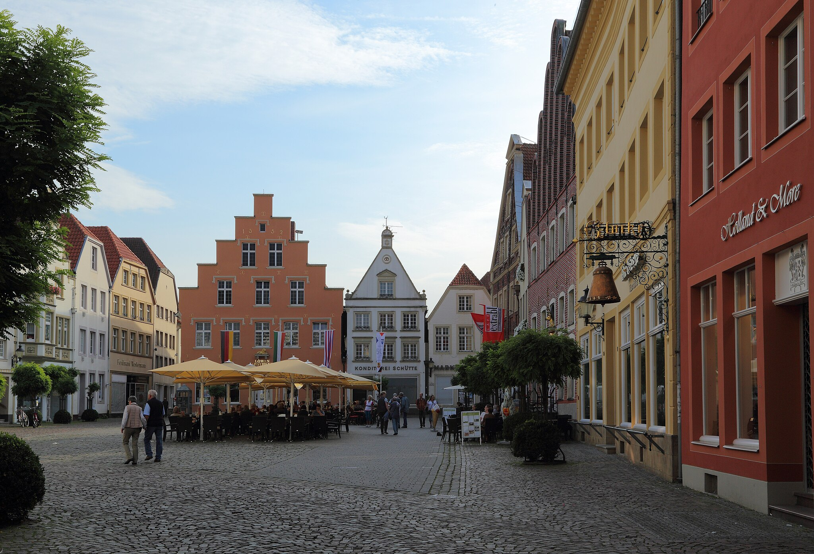

About me
I was born and raised in Warendorf, a cute little town somewhere in Germany. It's a great place to live if you're into horseback riding, but not so much if you're interested in physics. So I moved to Munich at the age of 18, and did some cool physics there. I started out in astrophysics, and did two incredibly fun research internships: One at the Max Planck Institute for Astrophysics and one at the Nicolaus Copernicus Astronomical Center. After my four years of undergrad, it was time for me to explore new places, and so I moved to Cambridge (MA) to do my PhD.
In my free time, I like to try to play the piano and hang out with friends. I also like hiking, snowboarding, squirrels, blueberries, other berries, the number tau, and food. I don't like pi.

Warendorf's markte place. I wonder if there is a treausure hidden there.
Image credit: J.-H. Janßen, CC BY-SA 3.0